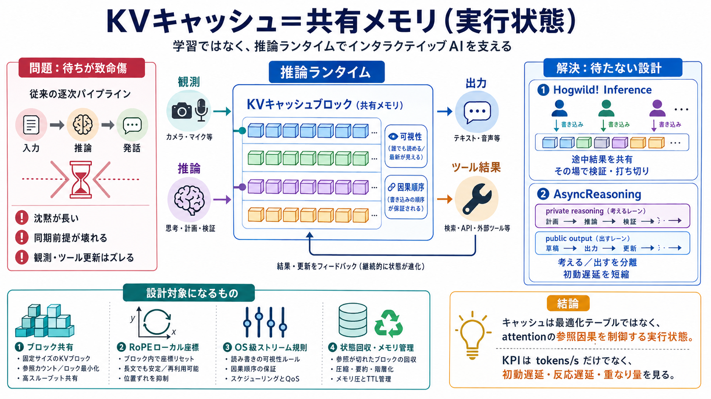

Hogwild! Inference: Parallel LLM Generation via ...
B Implementation Details Here we discuss additional implementation details and possible alternatives. To recall Section …

インタラクティブAI（観測しながら考え、書きながら考え、ツール結果に即応）を支える鍵を、学習ではなく「推論ランタイム」に置きます。
KVキャッシュ＝最適化ではなく、共有メモリ（実行状態）
複数ストリームを待たずに進め、軌道修正と部分出力を両立
通常のLLMは「入力→推論→発話」を同期的に進めがちで、非同期な観測・ツール・行動には追従しにくいです。
沈黙が長い：読む→考える→答えるの逐次ループ
同期前提が壊れる：カメラ/音声/ツール更新は時間的にズレる
KVキャッシュを「過去計算の受け身保存」から「今起きている推論の状態を他者が見られる共有メモリ」へ変えます（visibility/因果順序の設計）。
キャッシュ＝再計算を避けるためのテーブル（計算は固定）
キャッシュの分割・順序・可視性が attention の参照因果を変える
キャッシュを“フラットな追記テンソル”ではなく、キャッシュブロックとして進化させ、複数ストリームが同一物理ブロックを異なる論理オフセットで参照できるようにします。
ブロック共有（shared cache blocks）＝物理は共通、見え方は論理で変える
RoPEで回転（位置変換）を合成でき、参照時に“ローカル座標”を作れる
attentionが参照する「どの過去トークンが、どの相対位置として見えるか」が変わるため、学習済み重みは同じでも出力は変化し得ます。
自己回帰：次トークンは過去状態に依存
キャッシュの分割/順序/可視性＝参照因果そのもの
Hogwild! Inferenceは、同一モデルを複数ワーカーで並列実行し、生成途中の状態を共有キャッシュへ書き込みます（互いの途中結果を見て分岐）。
外部で決め打ちした協調ではなく、“その場で”検証と打ち切りを判断
投票/ラウンド統合より早い：途中生成が他者に即可視
AsyncReasoningは、推論（private reasoning）と可視出力（public output）を同じ推論プロセス内で別ストリームとして扱い、互いに待たないようスケジューリングします。
初の非推論トークンまでの時間を短縮し得る
高速化（計算削減）だけでなく、可視出力の進みを推論の遅延から切り離す
Hogwild!は「並列ワーカー間で共有して協調」、AsyncReasoningは「推論と出力を分離して応答性」を高めるアプローチです。
共有キャッシュで途中結果を可視化（並列）
推論/出力を別ストリームで進行（非同期）
キャッシュの可視性と因果順序を“設計対象”にする
SGLang等のサービング基盤では、名前付きストリーム、可視性規則、割り込み、状態回収、連続バッチなど“OSのランタイムに似た”インタフェースが必要になります。
ストリーム管理・割り込み・可視性（誰が何を見えるか）
バッチ化/状態回収/メモリ管理/推測デコードの整合
記事の主張は「学習なし（training-free）でインタラクティブ挙動を引き出せる」こと。ただしタスク依存になり得て、失敗条件の評価が必要です。
既存モデルに“実行プロトコル”を載せ、待たずに軌道修正
部分情報・不整合時の挙動が弱い可能性／定量条件が不足
スループット（tokens/s）だけでなく、初動遅延・反応遅延・重なり量・待たない割合など、非同期性に合うKPI設計が採用判断に直結します。
初の非推論トークンまで/出力の立ち上がり（responsiveness）
計算・メモリ・実装コスト増、失敗時の悪化（安全用途で重要）
KVキャッシュを“能動的な実行状態（共有メモリ）”として扱うと、並列化と非同期化が「設計問題」になり、インタラクティブ性を学習以外でも引き出せます。
キャッシュ＝計算を変える因果の制御
RoPEでブロックを多視点化（ローカル座標）
サービングはOS級ストリーム/可視性/回収が要る
B Implementation Details Here we discuss additional implementation details and possible alternatives. To recall Section …
Here we discuss additional implementation details and possible alternatives. To recall Section 3.4, Hogwild! inference c…
Hogwild! Inference presents a novel shared KV-cache framework enabling multiple LLM workers to collaborate concurrently …
Hogwild! Inference takes advantage of Rotary Position Embeddings (RoPE) to avoid recomputation while improving parallel …
the core Hogwild! setup: multiple workers, one shared KV cache, emergent coordination via self-prompting. Compute the wa…